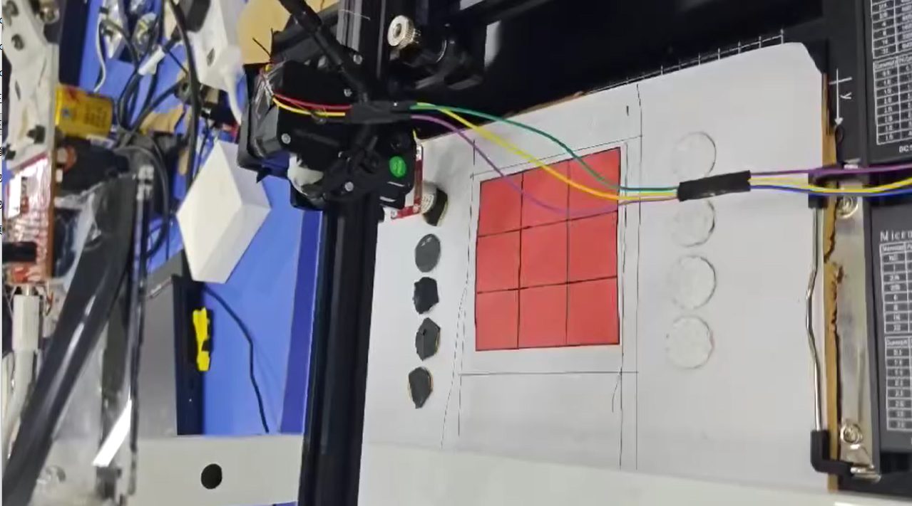
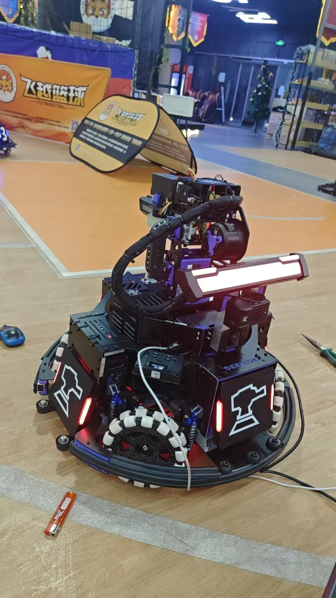
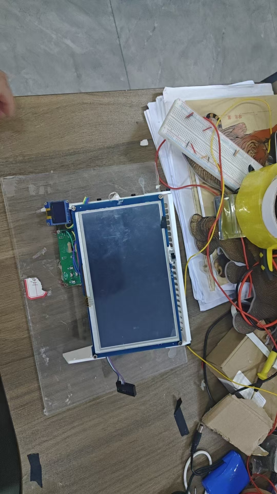
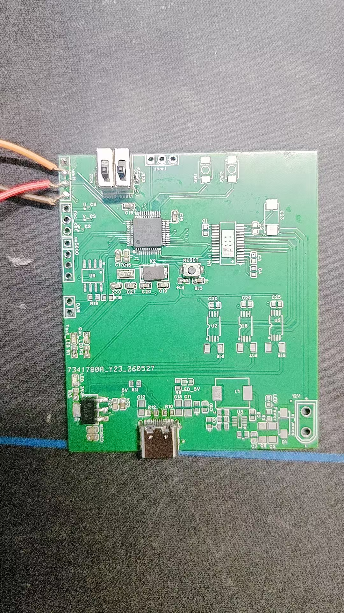
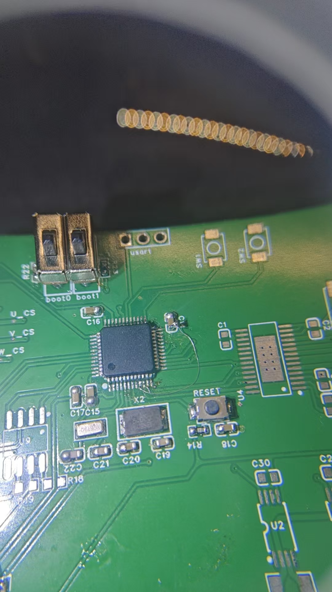
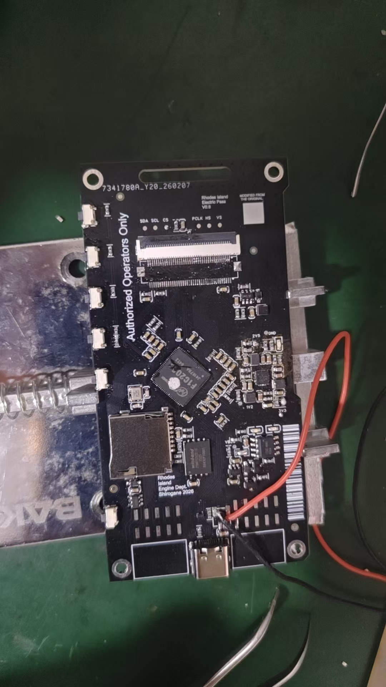

个人信息
基本信息
- 姓名：你的名字
- 职位：嵌入式软件工程师 / Firmware Engineer
- 所在地：城市，国家
- 邮箱：your.email@example.com
- GitHub：github.com/your-username
关于我
拥有 X 年嵌入式系统开发经验，深耕于 ARM Cortex-M/RISC-V 平台，
熟悉 RTOS（FreeRTOS / Zephyr）与裸机开发。
关注低功耗设计、驱动开发与硬件-软件协同调试。
联系方式
- 微信：your_wechat
- 电话：+86 138-0000-0000
- LinkedIn：linkedin.com/in/your-profile
项目经验
项目一：项目名称
时间：202X.XX — 202X.XX
角色：嵌入式软件工程师
描述：请描述项目背景与目标。
负责内容：
- 负责 XXX 模块的驱动开发与调试
- 使用 I2C/SPI/UART 等总线协议与传感器通信
- 基于 FreeRTOS 实现任务调度与低功耗管理
技术栈：STM32F4 · FreeRTOS · C · IAR Embedded Workbench
项目二：项目名称
时间：202X.XX — 202X.XX
角色：嵌入式开发工程师
描述：请描述项目背景与目标。
负责内容：
- 基于 ESP32 开发无线数据采集终端
- 实现 MQTT 协议上报数据到云平台
- PCB 原理图评审与硬件调试
技术栈：ESP32 · ESP-IDF · MQTT · Python（上位机）
项目三：项目名称
时间：202X.XX — 202X.XX
角色：嵌入式软件工程师
描述：请描述项目背景与目标。
负责内容：
- 设计并实现 Bootloader（基于 YMODEM 协议）
- 编写单元测试与硬件在环测试（HIL）
- 撰写技术文档与测试报告
技术栈：ARM Cortex-M3 · C · Python · pytest
技术栈
编程语言
- C / C++ — 主力语言，X 年经验
- Python — 自动化测试、数据分析、上位机开发
- Rust — 嵌入式裸机开发（了解/熟练）
- 汇编 — ARM Cortex-M / RISC-V 启动代码与优化
嵌入式平台
| 平台 | 经验 |
|---|---|
| STM32 (F0/F1/F4/H7) | 熟练 |
| ESP32 / ESP8266 | 熟练 |
| NXP i.MX RT | 有经验 |
| 国产 MCU（GD32/CH32） | 有经验 |
| RISC-V (K210 / BL808) | 了解 |
| Arduino / Raspberry Pi | 原型验证 |
RTOS / 操作系统
- FreeRTOS — 任务调度、队列、信号量、低功耗 Tickless
- Zephyr RTOS — 设备树、驱动框架、构建系统
- RT-Thread — 有经验
- Linux — 嵌入式 Linux 驱动、交叉编译、Yocto/Buildroot
协议与总线
- 有线：I2C · SPI · UART · CAN · USB · Ethernet
- 无线：BLE · WiFi · LoRa · NB-IoT
- 应用层：MQTT · CoAP · HTTP/HTTPS · Modbus
工具链与调试
- IDE：Keil MDK · IAR Embedded Workbench · STM32CubeIDE · VS Code
- 调试器：J-Link · ST-Link · DAP-Link · OpenOCD
- 逻辑分析仪：Saleae Logic · DSView · PulseView
- 版本管理：Git · GitHub · GitLab
- CI/CD：GitHub Actions · Jenkins
硬件技能
- 原理图阅读与审核
- 多层 PCB 布局（Altium Designer / KiCad）
- 焊接与硬件调试（示波器 · 万用表 · 信号发生器）
- 低功耗电路设计
- 传感器选型与验证
作品集
作品一：三子棋人机对弈系统

嵌入式负责人（硬件设计+运动控制+博弈算法），2024.07-2025.08
- 使用嘉立创EDA完成STM32F103主控板及步进电机驱动扩展板设计，引入继电器控制电磁铁取放机构，提高系统可靠性
- 采用编码器反馈结合PID闭环控制算法，实现双步进电机高精度运动控制，定位精度达到 ±0.5mm
- 通过UART与OpenMV视觉模块通信，实现棋盘与棋子坐标实时获取
- 基于Minimax算法进行优化，引入快速查表机制提升决策效率，AI决策时间缩短至100ms以内
作品二：RoboMaster哨兵机器人

嵌入式软件负责人，2024.10-2026.04
gitee：gitee.com/li-xiaomiao_1/seeker-electronic-control-code
全国大学生机器人竞赛项目，负责机器人嵌入式控制系统开发，包括软件架构设计、RTOS移植、电机控制网络搭建以及姿态解算算法实现。
- 设计并搭建 BSP-Module-App 三层软件架构，提高代码复用性与可维护性
- 移植FreeRTOS，划分云台控制、底盘运动和发射管理任务，通过优先级调度和信号量同步保证实时性
- 构建CAN总线电机控制网络，并设计ID仲裁机制避免总线冲突
- 基于BMI088传感器开发四元数姿态解算算法，结合卡尔曼滤波提高测量精度，精度达到 ±0.1°
- 实现带梯形积分、低通滤波及输出限幅的串级PID控制器，完成位置-速度-电流三环控制
- 设计串口通信协议，实现双MCU间高速数据交互

项目获得 2025、2026 RoboMaster 联盟赛国家二等奖
作品三：电机控制驱动器

FOC 无刷直流电机驱动器，用于机器人关节控制。
- 硬件：STM32G431 · 三相逆变桥 · 霍尔/编码器接口
- 固件：双环 PID（速度环 + 电流环）· SVPWM
- 性能：转速闭环精度 ±1 RPM · 20kHz 开关频率


作品四：硬件原理图设计
基于 STM32 系列 MCU 的系统原理图设计，涵盖电源管理、外设接口、电机驱动等模块。
查看完整原理图（PDF）
- 设计工具：嘉立创EDA / Altium Designer
- 模块：电源管理 · MCU最小系统 · 电机驱动 · 通信接口
提示：将作品实物照片放入portfolio/文件夹， 文件名与上面img src中的路径一致即可自动显示。 支持 JPG / PNG / WebP 格式。